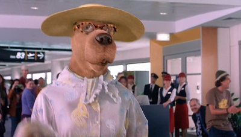
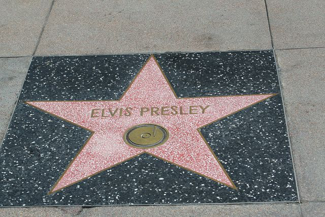
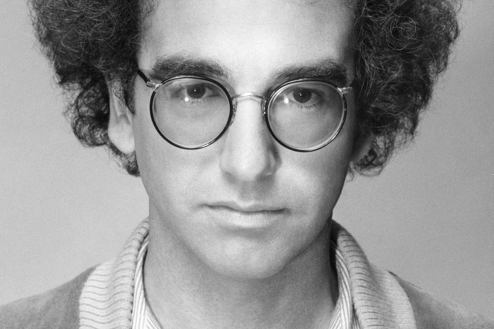
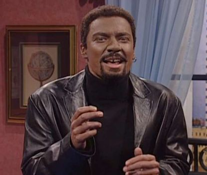
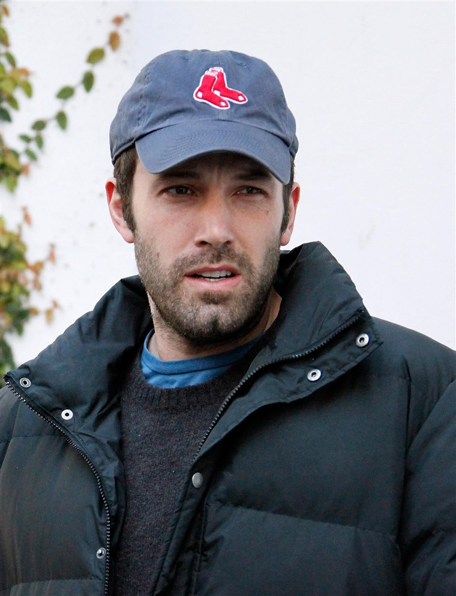
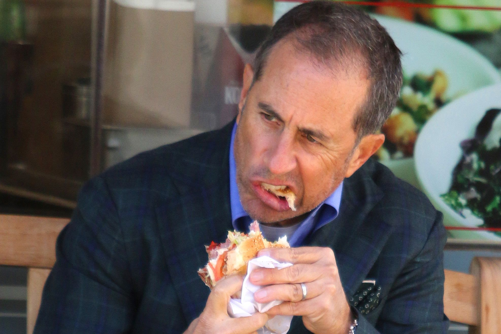
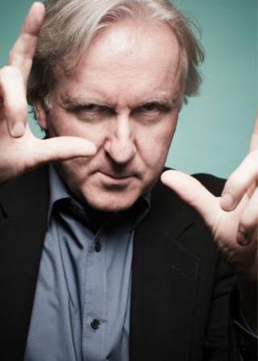

This year has been crazy, and I'm sure we're all aching to know which stars managed to make this year all about them. Here's the run-down on the who's-who of dying.
Nation Loses Cookie Mogul
Famous Amos from Famous Amos Cookies dies after a crazyyYYYYyYY sex party on Fire Island! He was reported to have coke, LSD, ecstasy, poppers, horse tranquilizers, mucinex, and children’s tylenol running through his bloodstream. Go Amos!
RIP Daniel Ortega
It is with great sandness that we report Nicaraguan President Daniel Ortega has died in a horrific incident involving several extremely attractive and very hostile captive protesters. We will remember him for the many children he left behind, due to his extremely extensive and successful anti-abortion policies. Rest in peace, Mr. Ortega — there are no babies in heaven.
Public Mourns Billy Joel
“Only the Good Die Young”… Billy Joel died at age 85. Sometimes the simplest words are the truest and this is one such time. “Joel was born in 1949 in the Bronx, New York, and grew up on Long Island, both places that influenced his music.”- Wikipedia
And his name was John Cena...
John Cena, wrestler, entrepreneur and ordained minister of the Church of Scientology, passed away on Friday from an intentional laxative overdose after discovering, much to his dismay, that people could indeed see him.

The Complicated Legacy of Scoob
Famous cartoon dog ‘Scooby Dooby Doo’ was put to death last Saturday by lethal injection. This came after the shocking sentence given by a federal judge after accusations of war crimes. Reportedly, after bigfoot sightings in Scottwood, Arizona, Mr. Doo tortured Old Man Jenkins using the technique popularly known as ‘waterboarding.’ Mr. Jenkins claimed he had nothing to do with the bigfoot sightings, regardless of the meddling kids. Other reports of torture methods surfaced, involving castration, ruthless beating, as well as Scooby Doo gnawing on their bones whilst still attached. The great dane’s last words were, “I ruv ru Raggy.”

Elvis has left the building!
After resurfacing from his 53 year absence, famed singer, Elvis Presley died on impact after he was struck by a pornographic transport vehicle -- “BangBus” -- after surfacing from the Eyes Wide Shut sex dungeon.
The Wicked Bitch is Dead
Margaret Thatcher, daughter of author to the stars and poet laureate J.K. Rowling, has passed away. The 1-year old child was quoted as “being a real fucking asshole” by her mother, having emerged from the womb fully-formed, and legally elected as the Prime Minister of the UK. Police suspect the cause of death to be Russian interference.
Johnny Sins Will Sin No More
The nation mourns American hero Johnny Sins after he succumbed to a heart attack this fall. An incredibly hard worker, he had many occupations such as being a soldier, pizza delivery man, plumber, teacher, and doctor among many others before founding Sins production company.
“He was just soooooo good, makes you almost magnetically attached to him,” a former student of his high school physics class recalls. “Too bad the extra credit made my ass hurt but it COMES in handy.”
Millions of men raised a hardened erect cock in his honor tonight.
Richard Dawkins Has Met God
Richard Dawkins, CEO of Atheism, moral god, and master of philosophy, has ascended to heaven in a tragic accident spanning half a decade. After tripping over his shoelaces and falling into a deep coma as a result, during which time he formed an inexplicable mental link between shoelaces and black licorice, he made a miraculous recovery from a near total loss of brain function. Shortly after, he hungrily ate his shoelaces and choked to death.
Grant Macdonald Rammed for the Last Time
The youth of America mourn for family entertainer, Grant Macdonald, whose music inspired a generation of children to aspire to be cowboys. Known for smash viral hits such as “Ram Ranch” and the popular series that follows it, Macdonald died after getting fucked in his sleep by US Marines raiding his residence of Ram Ranch, Texas. The 18 cowboys who live with Macdonald mourn for him, as with the rest of the nation.

NYC Mourns the Loss of Woody Allen
New York weeps for the loss of Oscar winning filmmaker Woody Allen, who died last Sunday after a tragic taxi-cab accident. He was rushed to the hospital in the company of his daughter, sister, step-child, and wife. She refused to comment.
The Nas Family Tree Loses Two Branches
It is with great passing that we report the passing of rappers Nasir “Nas” bin Olu Dara Jones and DMX “X” Simmons, who tragically passed during a tragic thumb wrestling accident. They are survived by their son Lil Nas X.
Mally Bieber In Custody After the Death of Her Owner
Justin Bieber has passed. The death has been ruled “monkeycide.” His companion, Mally, gave the following statement from custody:
"Monkey kill Justin Bieber because Monkey the only one in Justin Bieber’s will
Monkey live in Costa Rica smoking cigars, living off Justin Bieber 30 million dollar estate
Monkey take over Justin Bieber persona and takes over the industry. Monkey buy wig.
Only Monkey Bieber, there is nothing else."
Lebron James' Wild Night
The entire Lakers coaching staff ran a train on LeBron James, leading to his untimely death. The amount of cocks that were stuffed inside his anus caused a shock-induced seizure followed by the unsightly explosion of shit from every one of his pores. Rest in peace to a real one.
Dr. Richard Tyler "Ninja" Bevins Has a BIG Fall
Twitch streamer and Masked Singer Season 2 contestant Dr. Richard Tyler Bevins aka Ninja aka No-Balls-RTB dies after mistaking a plane for Fortnite. His fans knew him as Ninja, but his friends and family knew he had no balls, so they called him No-Balls-RTB. No-Balls-RTB fell out dropping out of a plane thinking its Fortnite. He will be missed by the Twitch community, and his wife, who will likely never find another man as loving as Dr. Bevins.

Jimmy Fallon Dies On Air
The Tonight Show is frantically searching for a new host after Jimmy Fallon, cultural laughterbation pioneer, died on air Friday night. Fallon choked to death during an interview after Hillary Clinton told him to “PokémonGo to the polls,” in which authorities began an investigation shortly afterwards to lock her up. The Youtube clip has ten million views less than 24 hours after the episode aired. Media analysts are saying "Lorne's greatest contribution to late night was the success and ultimate demise of Jimmy." He will be remembered for his amazing impersonation of Chris Rock.
Comedian Killed After Being Mistaken for 11-Year-Old Boy
On Saturday Sept 23rd, famous comedian Aziz Ansari was kidnapped by notorious pedophile Johnny Bauers, who had mistaken the Babe.net cover star for an 11 year old boy. In a manifesto uncovered by local law enforcement, Bauers confessed to discovering Ansari’s “disgusting, middle aged penis,” prompting him to mercy kill Ansari and flee the scene. Bauers is still at large. Top universities at the Research Triangle are currently lobbying for the Ansari estate to donate his body to science. Resident deformed-penis-owner and adjunct professor at Duke University, Harvey Weinstein, could not be reached for comment.

Ben Affleck Honor Kills Himself
Actor Ben Affleck was taking a leisurely drive down Hollywood Boulevard when he was informed that the previous owner of his white Range Rover was none other than Alex Rodriguez, the mortal enemy of his Boston Red Sox. After he learned this, he promptly exited the moving vehicle, and was pronounced DOA eight minutes later.

The Latest Tragedy to Rock the Jewish Community
It is with great sadness that we announce the death of legendary Jew and comedian actor Jerry Seinfeld. His passing is apparently due to an unfortunate accident at Einstein Bagel Bro’s. According to official sources, the popular bagel chain has lowered its standards for their bagel counter service staff. Gross negligence led a goyish, sickly looking boy with thin blonde hair to ignore the late Mr. Seinfeld’s request for a “good jewish bagel” and instead, served him his everything bagel with lox, cream cheese, tomatoes, capers, and red onions toasted. The legendary comedian collapsed after touching the warm sandwich. The entire Jewish community is mourning his loss, and we ask that you give the Seinfeld family and friends the opportunity to grieve in private. There will be a public vigil held in his honor on Wednesday, January 27, 2021. The public is urged to pay their respects by boycotting Einstein Bro’s bagels, divesting from Brueger’s Bagels, and upholding sanctions for Panera Bread.

James Cameron Dies, Finally
Filmmaker James Cameron died of douche-tool disease. Yeah.